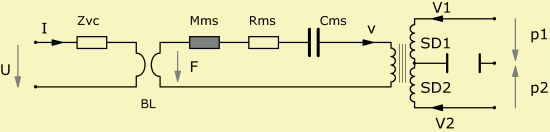
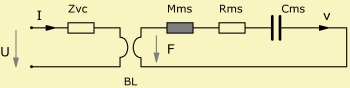
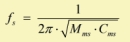
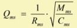
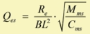
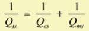
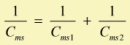

Electro Dynamic Driver, Voice Coil Model, Mechanics of Driver, Lumped Element Diaphragms

The standard model of an electro-dynamic transducer models the electrical, mechanical and acoustical parts.
The electric network parameters are the voltage U and current I. The mechanic parameters are the force F and velocity v. The acoustic parameters are the pressure p and volume-velocity V, one pair for the front and one for the rear side of the diaphragm.
The electrical part consists of the Voice Coil Impedance Zvc and the electro-mechanic motor.
The mechanical part is modeling only one rigid body motion, which is the translation in axial direction. Rotations and eigen-vibration of the diaphragm are ignored.
There are two diaphragms - one for the front and one for the rear. The area of the first is SD1 and the second is SD2. The diaphragm area is assumed to represent an effective lumped value, which includes the effect of distribution. See chapter Lumped Element Diaphragms.

The vacuum allows to define certain technical parameters
 |
 |
| Resonance frequency | Mechanical quality factor |
 |
 |
| Electrical quality factor | Total quality factor |
 |
|
| with mechanical compliance, see mechanics of driver | |